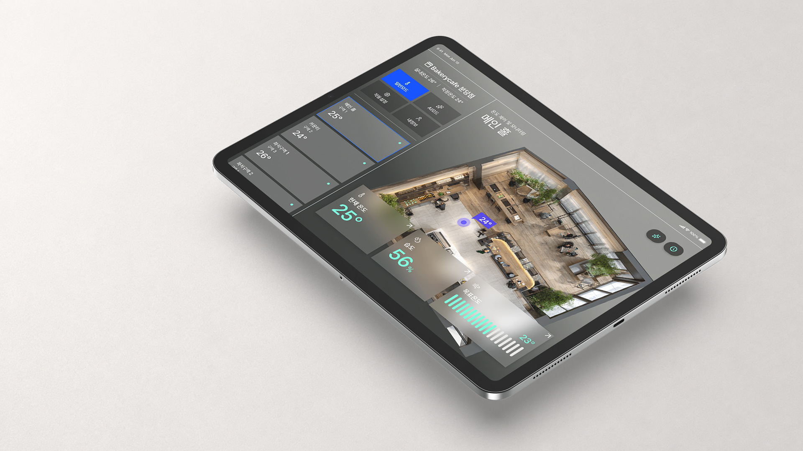
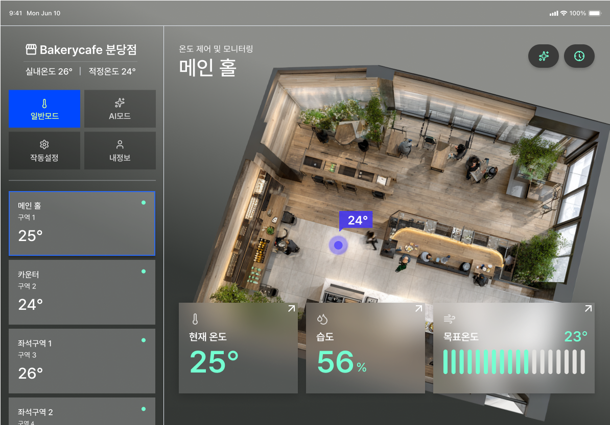
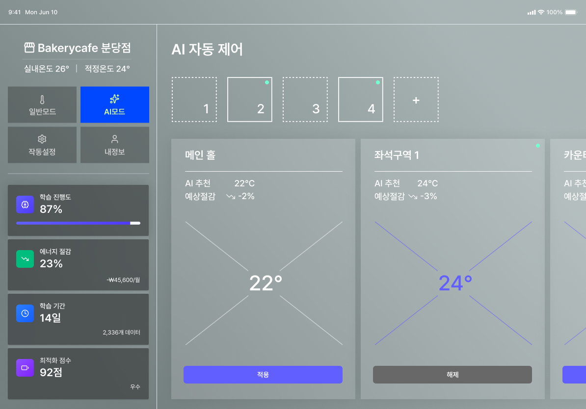
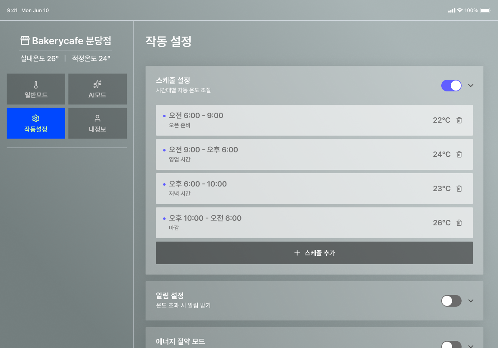
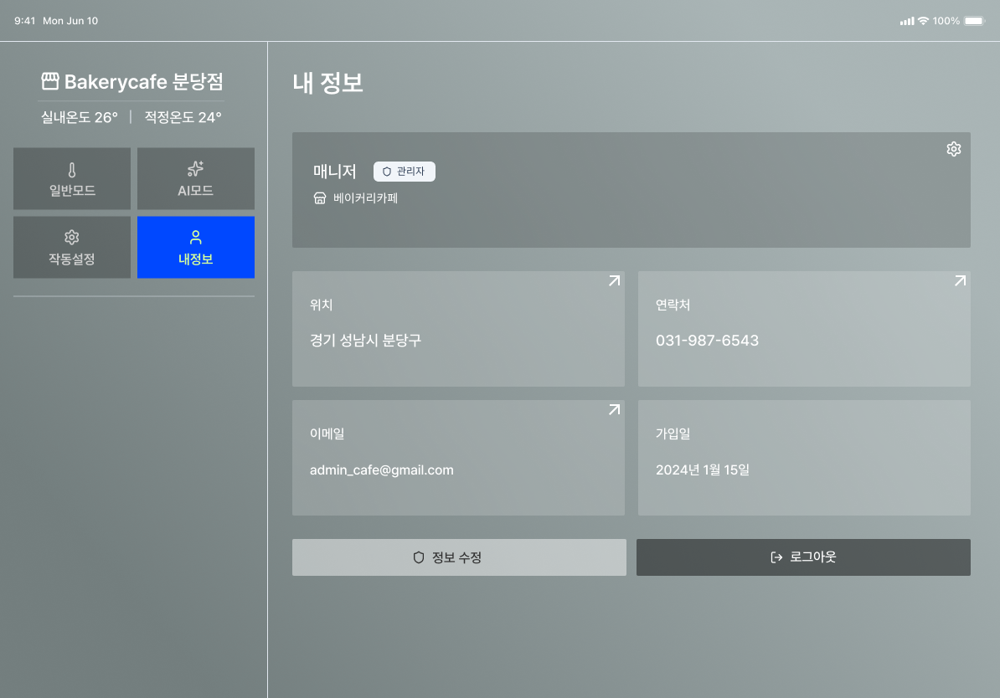
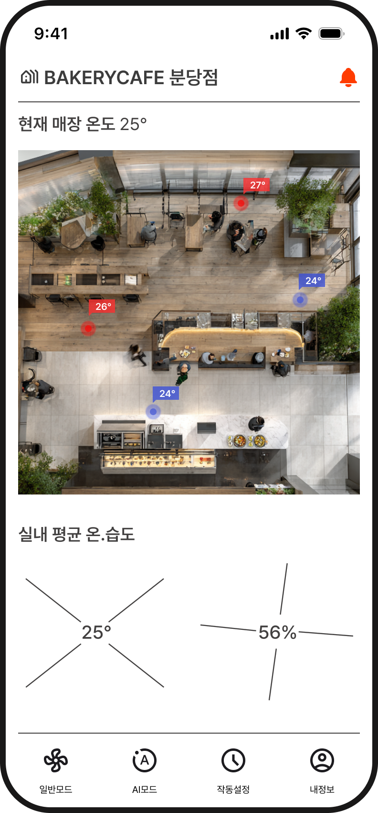
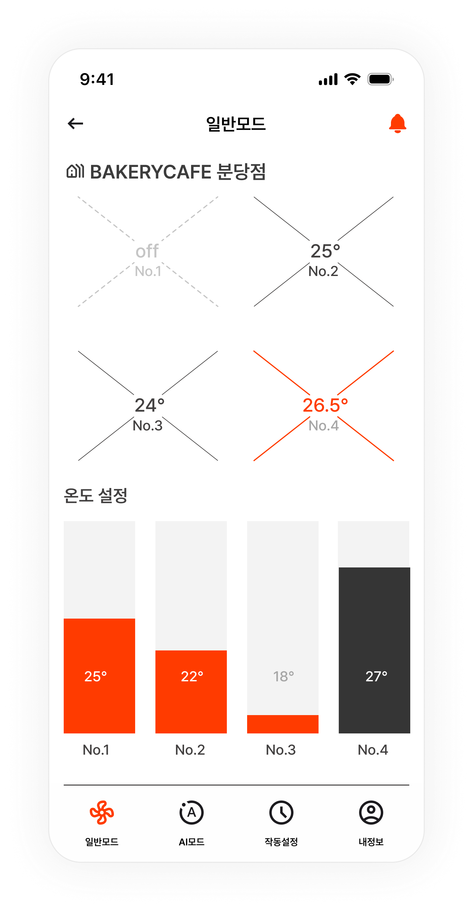
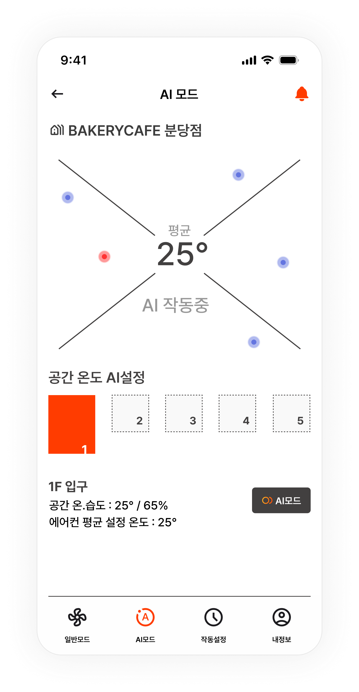
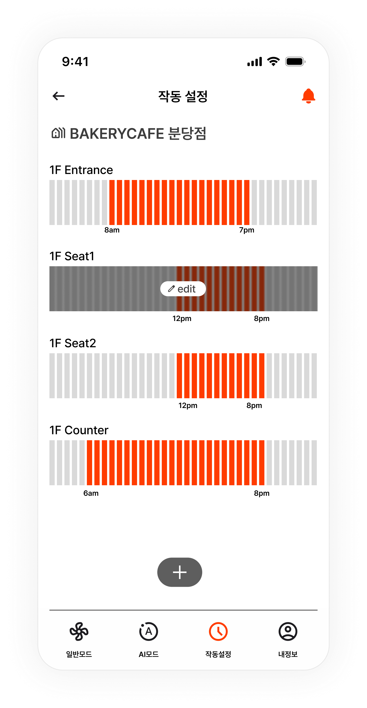

AI Space
Temperature Control
AI 기반 공간 환경 제어 시스템을 위한 태블릿·모바일 UX/UI 디자인
Photoshop
UX Planning
UI Design
Design System

AI 기반 공간 환경 제어 시스템의 사용자 경험을 설계했습니다.
AI 기반 공간 환경 제어 시스템의 관리자용 애플리케이션을
설계했습니다.
사용자는 매장의 온도 및 습도를 실시간으로 확인하고,
AI 제어 기능을 활용하여 최적의 온도를 적용하거나
공간별 제어 시나리오를 직접 설정할 수 있습니다.
태블릿에서는 전체 공간을 모니터링하는 Dashboard 역할을,
모바일에서는 현장 제어와 빠른 설정 중심의 UX를 설계했습니다.
복잡한 제어 구조
분리된 공간·AI 기능을 공간 선택 → 상태 확인 → 제어의 하나의 흐름으로 재구성했습니다.
사용 경험 부재
관리자가 먼저 확인할 정보와 바로 실행할 제어 기능을 사용 맥락에 맞춰 화면별로 구분했습니다.
서비스 확장성
태블릿의 전체 모니터링과 모바일의 현장 제어가 같은 구조 안에서 이어지도록 설계했습니다.
UX / UI Design
Dashboard 정보 구조와 AI 제어 흐름을 정의하고, Tablet·Mobile UI 및 Design System을 설계했습니다.
정보의 우선순위에 따라 제어 흐름을 설계했습니다.
공간을 선택한 뒤 현재 환경을 확인하고, 상황에 따라 직접 또는 AI 제어를 선택한 후 반복 조건은 설정에서 관리하도록 구성했습니다.
Tablet & Mobile UI
공간 환경을 한눈에 확인할 수 있는 Tablet UI와 현장에서 빠르게 제어할 수 있는 Mobile UI를 하나의 서비스 경험으로 연결했습니다.

Basic Mode
현재 공간 모니터링

AI Mode
AI 기반 추천 온도 확인

Settings
공간별 스케줄 및 AI 설정

My Info
계정 및 계정 정보 관리

Home
현재 공간 모니터링

Basic Mode
현재 공간 온도 모니터링

AI Mode
AI 기반 추천 온도 확인

Settings
공간별 스케줄 및 AI 설정
제품 중심 기능을 일관된 서비스 경험으로 확장했습니다.
사용 맥락에 맞춰 태블릿은 전체 상황을 파악하는 Dashboard,
모바일은 현장에서 빠르게 제어하는 경험 중심으로 역할을 나누었습니다.
AI 제어와 설정 기능도 같은 정보 구조 안에서 연결해,
기기가 달라도 일관된 조작 경험을 유지하도록 설계했습니다.
Dashboard
전체 공간의 상태와 주의 정보를 먼저 확인한 뒤, 개별 공간 제어로 자연스럽게 이어지도록 설계
Quick Control
현장에서 확인·조작이 필요한 정보를 우선 배치해, 빠르게 제어할 수 있도록 설계
Intelligent Control
AI 추천값을 단독 기능이 아닌 현재 환경을 바탕으로 판단하고 선택하는 제어 옵션으로 연결
Consistent UI
동일한 정보 위계와 컴포넌트를 기반으로, 환경이 달라도 예측 가능한 UI를 유지